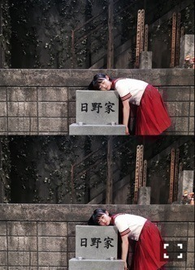
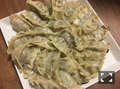
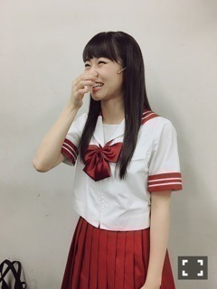

| 2016/10 25 Tue | 清々しい。745回目 |
舞台『墓場、女子高生』
16公演、完走致しました！！

日野陽子の思いを受け止めて
どうにか伝わらないように、
でも、彼女の覚悟と正義が届くように。
あの墓場で過ごした
清々しくて虚しくておぞましい時間、
どんなに酷でどんなに幸せだったのか。
舞台上は冷房かなんかで
少し冷えてて煙たくて、
時々風が吹いたりしてました。
墓場にいたんだなあ。
もう行けないと思うと寂しくなります。

日野はいつだって自分と闘って
消化して結論を出していました。
不条理だったとしても
それは彼女の美学であり、
彼女なりの正義なのです。
日野としてこの作品と向き合えたことは、
これからの自分にとって大きい。
のしっと重たいものを持ちつつ
くそまじめに楽しめました。
必要で、望んでいることだった。
未熟ながらも舞台で息をしている時間って
いちばん幸せだなーと、思えた！
福原さん、丸尾さん、スタッフの皆様、
みのすけさん、加瀬澤さん、もう中さん、
柿丸さん、メンバーのみんな、
本当にありがとうございました。
たくさん助けられました。
本当にお疲れ様でした！
そして、
ご来場 ありがとうございました。

最近うれしかった話
墓女会にて餃子包むの褒められたこと。
すごい餃子包みたい気分だよ！いま！！！

突っ走った分、喉にきてしまった、、
握手会、後半話せなくて
すみませんでした。
舞台やライブの感想ありがとう！

センター奈々未の卒業シングルとなる
16th「サヨナラの意味」
ミュージックビデオ公開中！
贅！沢！参加できて良かった。
映画『Anniversary』全国順次公開。
27日、トークイベント登壇します！
どうぞよろしくお願いします。
まりか
コメント(527)
2016/10/25 23:30